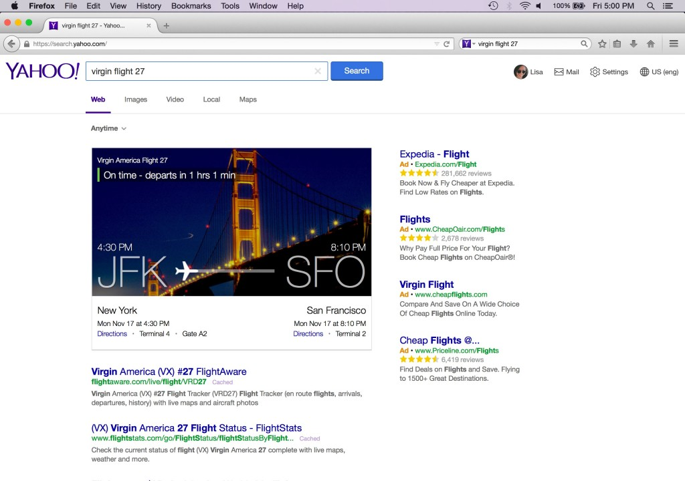
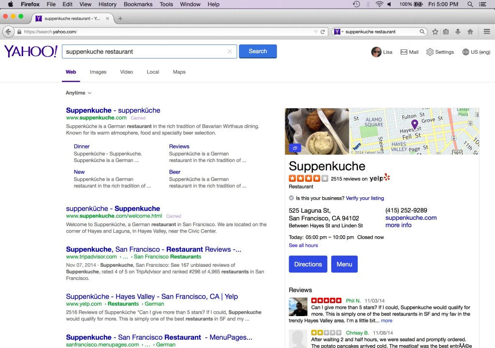
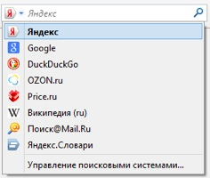
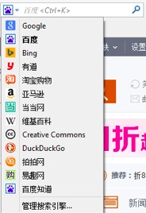

Mozilla 在十年前打造 Firefox，要將網際網路的力量交到所有人手上，即為眾人提供更多選擇，以掌握自己的線上生活。我們當時專心設計產品以獲得必要的能量、創造力、競爭力，進而保持 Web 的開放、獨立、普及度。我們在上週就誓言要做得更好、更多。
Firefox 與線上搜尋
搜尋服務一直是所有人線上生活的核心 ─ 每年光是 Firefox 使用者的線上搜尋活動就超過一千億次。
透過 Firefox，我們更進一步整合並普及了瀏覽器的搜尋服務。包含 Google 與 Yahoo 在內，Mozilla 一直與多家網路公司合作，要提升搜尋體驗並達到更高效益，進而完成 Mozilla 念茲在茲的使命。
當我們設定單一的預設搜尋選項時，也等於拒絕了排他性的商業條款而打破了業界標準。最近十年來，Firefox 仍持續內建多樣的搜尋引擎，且使用者均可依自己喜好而輕鬆更改、新增、移除相關服務。
從 2004 年起，Google 就一直是 Firefox 的預設搜尋引擎，而雙方所簽訂的協議正好在今年到了換約時間點。Mozilla藉此機會更重新審視了自己的競爭策略，並積極向外探尋更多選擇。
我們在評估搜尋服務的夥伴時，主要先考量自己的策略是否符合本身對選擇與獨立性的價值觀，並仍保有必要的創新性與發展性，得以繼續為 Web 與使用者提供最好的服務。最後，我們口袋裡的合作名單均具備健全的經濟條件，足以反應 Firefox 對整個生態系統所帶來的無比價值。但其實單一策略就能代表全盤的考量要點。
強化選擇與創新
Mozilla 在今天宣佈要改變 Firefox 搜尋服務的合作策略。我們不再與單一的全球搜尋服務商合作，而是海納更多當地特色且彈性的搜尋方式。Mozilla 在下列國家與新的搜尋夥伴合作，以強化 Web 的選擇性與創造力：
美國
- 根據今天宣佈的 5 年期新策略合作關係，Yahoo Search 將成為 Firefox 在美國境內的預設搜尋引擎。
- 從 12 月起，Firefox 使用者將擁有強化過的新 Yahoo Search 經驗，透過簡潔且前衛的介面獲得最佳 Web 焦點資訊。
- 基於此項合作關係，Yahoo 亦將支援 Firefox 的「不要追蹤我 (Do Not Track，DNT)」功能。
- Google、Bing、DuckDuckGo、eBay、Amazon、Twitter、Wikipedia 仍將內建為 Firefox 的其他搜尋服務選項。



俄羅斯
- Yandex Search 將成為 Firefox 在俄羅斯境內的預設搜尋引擎。

中國
- 百度 (Baidu) 仍將為 Firefox 在中國境內的預設搜尋引擎。
- Google、Bing、有道 (Youdao)、淘寶 (Taobao)，以及其他本地網站，仍將內建為 Firefox 的其他搜尋服務選項。

所有國家
- 不論使用者的搜尋偏好為何，Firefox 仍是屬於所有人的瀏覽器。
- 與他款瀏覽器相較，Firefox 仍將提供更多的搜尋服務。Firefox 現已提供 88 種語言的版本，並內建 61 個搜尋服務商可供選擇。
- 即使 Mozilla 選擇不再續約全球性的預設搜尋引擎，但 Google 仍將是內建的搜尋選項。
- Mozilla 現將專注拓展與夥伴之間的合作關係，期能行跨桌機與行動裝置，開發創新的搜尋介面、更完善的服務內容經驗，更強化的隱私防護功能。

Mozilla 的新搜尋策略，必將加速完成我們為所有人打造 Firefox 瀏覽器時的承諾。相信新的合作關係可嘉惠更多使用者，在更多地方提供更多創新的選擇與機會，最後讓大家都能更完整掌握自己的線上生活。
這也是 Mozilla 一直強調獨立性之所以重要的原因。非營利的本質促使我們自己要做出不同選擇。而這些選擇將保有 Web 的開放性、普及性、獨立性。Mozilla 認為今天就是朝正確方向邁出重要的一大步。
原文連結：New Search Strategy for Firefox: Promoting Choice & Innovation